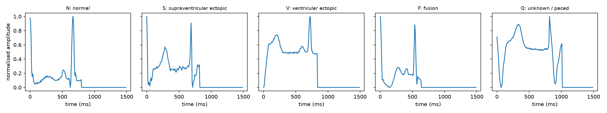
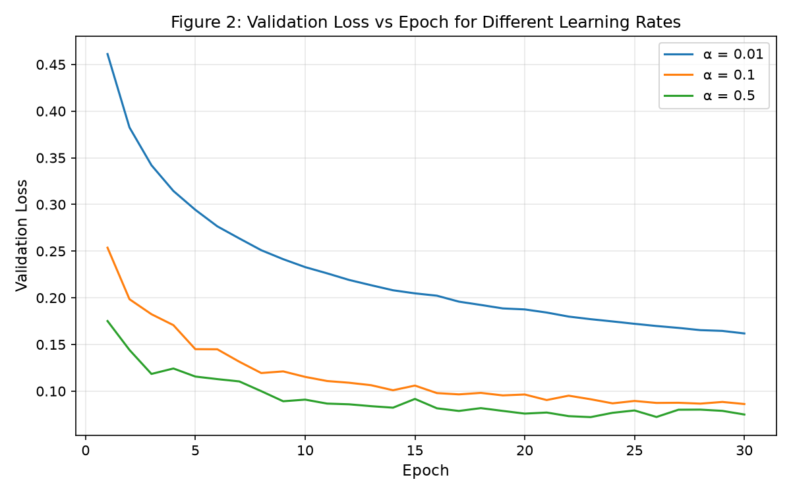
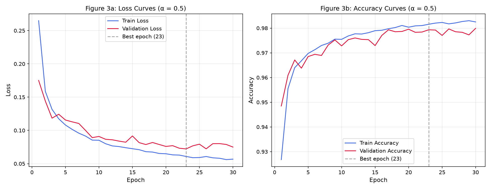
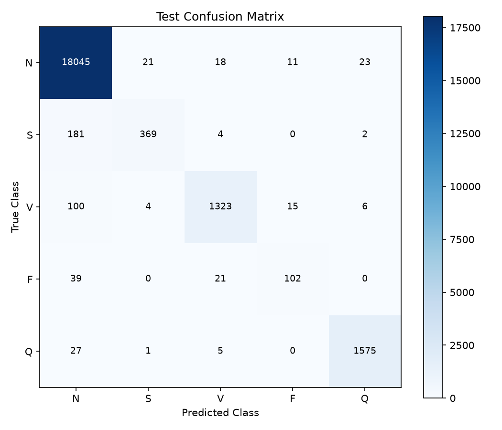
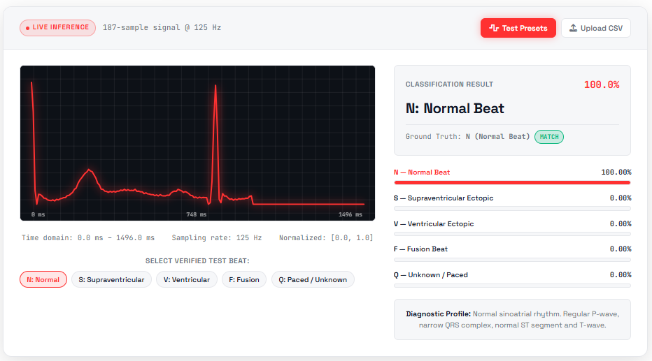

Evaluating cardiac arrhythmias from first principles with pure tensor math, hand-derived backpropagation gradients, custom numerical optimizers, and a critical look at why balanced accuracy matters over raw accuracy on imbalanced clinical datasets.
1. Executive Summary & The Clinical Challenge
The human heart is an autonomous, electromechanically synchronized pump. Every heartbeat is initiated by a wave of electrical depolarisation originating at the sinoatrial (SA) node, propagating sequentially through the atria, the atrioventricular (AV) node, the bundle of His, and the Purkinje network into the ventricles. An Electrocardiogram (ECG) records these microvolt-to-millivolt surface potentials across time, generating the signature P-QRS-T waveform:
R (Ventricular Depolarisation)
/\
/ \
P / \ T (Ventricular Repolarisation)
/\ / \ /\
--\/--------\---/--\------ Isoelectric Baseline
Q S- P Wave: Atrial depolarisation initiating atrial contraction.
- QRS Complex: Rapid ventricular depolarisation triggering powerful mechanical ventricular ejection.
- T Wave: Ventricular repolarisation restoring resting electrical equilibrium.
When structural myocardial disease, localized ischemia, or ectopic pacemaker foci disrupt this electrical circuit, the heart enters an arrhythmia. Premature Ventricular Contractions (PVCs) can trigger catastrophic ventricular tachycardia or fatal ventricular fibrillation within seconds. Continuous automated detection in intensive care units (ICUs) and wearable holter monitors is life-critical.
In this project, we formulate and address a foundational engineering question:
"How well does a small neural network recognise each distinct type of heartbeat, and is overall accuracy the right number to trust when healthy beats heavily dominate clinical datasets?"
To answer this rigorously, we design, derive, train, and validate a 3-layer deep neural network (ECGNet) completely from scratch in PyTorch—enforcing a strict zero-abstraction constraint (no nn.Linear, no nn.Sequential, no nn.ReLU, no torch.optim, and no high-level loss functions).
The Core Dilemma: Raw Accuracy vs. Balanced Accuracy
In our holdout test set of 21,892 real patient heartbeats from the MIT-BIH Arrhythmia Database, 18,118 beats (82.76%) are Normal, while life-threatening Ventricular Ectopic beats make up only 6.61%, and Fusion beats account for just 0.74%.
Consider a trivial "Always-Normal" baseline classifier that unconditionally predicts Class N for every incoming signal without performing any computation:
Accuracy(Always-N Baseline) = 18,118 / 21,892 = 82.76%On paper, 82.76% appears respectable. In an ICU setting, however, this baseline monitor would miss 100% of ventricular ectopic arrhythmias and 100% of supraventricular contractions, leading to fatal clinical consequences. To evaluate real clinical discrimination, we compute both Overall Accuracy and Balanced Accuracy (the unweighted mean of per-class sensitivities):
Accuracy = (1 / m) Σ 1[y_hat == y]
Balanced Accuracy = (1 / 5) Σ [ Accuracy(c) ] for c ∈ {N, S, V, F, Q}Our from-scratch network achieves 97.82% overall test accuracy and 83.65% balanced accuracy, delivering robust true positive sensitivity across rare pathological beats.
2. Dataset, Splitting Protocol & Morphological Anatomy
We utilized the standard MIT-BIH Arrhythmia benchmark dataset curated by Shayan Fazeli on Kaggle. Each heartbeat is segmented around the R-peak, resampled to fs = 125 Hz, zero-padded to a uniform vector length of 187 temporal voltage samples (∼1.5 seconds), and normalized between 0.0 and 1.0.

Morphological Waveform Anatomy:
- Class N (Normal Beat): Sharp, narrow QRS complex preceded by a well-defined P wave and followed by an isoelectric ST segment and positive T wave.
- Class S (Supraventricular Ectopic): Originates above the ventricles (atria or AV node). Because depolarisation travels through the normal His-Purkinje system, its QRS duration is almost normal; distinguishing S from N hinges on premature timing and subtle P-wave distortions.
- Class V (Ventricular Ectopic / PVC): Originates directly in ventricular myocardium. Conduction crawls through slow muscle-to-muscle pathways, creating a wide, bizarre, high-amplitude, often biphasic QRS complex with discordant T waves.
- Class F (Fusion Beat): Simultaneous ventricular depolarisation from both the normal supraventricular pathway and an ectopic ventricular pacemaker, yielding an intermediate hybrid waveform.
- Class Q (Unknown / Paced Beat): Characterized by sharp, high-frequency artificial pacemaker spikes followed by delayed, wide ventricular depolarisation.
Strict Deterministic Splitting Protocol:
The training file of 87,554 rows was partitioned into 90% Training (78,799 rows) and 10% Validation (8,755 rows) using a fixed pseudorandom seed (np.random.default_rng(42)). The independent test dataset (21,892 rows) remained completely sealed throughout model architecture selection, hyperparameter sweeps, and epoch tuning.
| Dataset Partition / Class | Training (90%) | Validation (10%) | Holdout Test Set | Clinical Description |
|---|---|---|---|---|
| N – Normal | 65,224 (82.77%) | 7,247 (82.78%) | 18,118 (82.76%) | Healthy sinus rhythm, bundle branch blocks |
| S – Supraventricular | 2,001 (2.54%) | 222 (2.54%) | 556 (2.54%) | Atrial or junctional premature contractions |
| V – Ventricular Ectopic | 5,209 (6.61%) | 579 (6.61%) | 1,448 (6.61%) | Premature ventricular contractions (PVCs) |
| F – Fusion | 577 (0.73%) | 64 (0.73%) | 162 (0.74%) | Hybrid sinus & ventricular activation |
| Q – Paced / Unknown | 5,788 (7.35%) | 643 (7.34%) | 1,608 (7.35%) | Pacemaker spikes, unclassifiable beats |
| Total Rows | 78,799 | 8,755 | 21,892 | 109,446 Total Heartbeats |
3. Network Topology & Parameter Count Derivation
To examine deep learning mechanics without framework shielding, our architecture (ECGNet) relies exclusively on raw 2D tensor weight matrices and 1D bias vectors registered as nn.Parameter.
Layer Dimensions & Mathematical Forward Pass:
- Input Dimension (n[0]): 187 temporal voltage points.
- Hidden Layer 1 (n[1]): 128 units, activated by custom clamped ReLU:
A[1] = clamp(X W[1]T + 1B b[1]T, min=0) - Hidden Layer 2 (n[2]): 64 units, activated by custom clamped ReLU:
A[2] = clamp(A[1] W[2]T + 1B b[2]T, min=0) - Output Layer (n[3]): 5 linear logits corresponding to classes {N, S, V, F, Q}:
Z[3] = A[2] W[3]T + 1B b[3]T
Exact Analytical Parameter Derivation:
| Layer | Weight Matrix Shape | Bias Shape | Weight Count | Bias Count | Total Layer Parameters |
|---|---|---|---|---|---|
| Hidden Layer 1 | 128 × 187 | 128 | 128 × 187 = 23,936 | 128 | 24,064 |
| Hidden Layer 2 | 64 × 128 | 64 | 64 × 128 = 8,192 | 64 | 8,256 |
| Output Layer 3 | 5 × 64 | 5 | 5 × 64 = 320 | 5 | 325 |
| Total Trainable | — | — | 32,448 Weights | 197 Biases | 32,645 Parameters |
He (Kaiming) Normal Weight Initialization:
All weight matrices are initialized from a zero-mean Gaussian distribution with standard deviation scaled by the input fan-in:
W[ℓ]ij ~ N(0, σ = sqrt(2 / n[ℓ-1])), b[ℓ] = 0Why is this mathematically essential?
- Symmetry Breaking: Initializing weights to zero causes every hidden unit to compute identical activations (
z = 0) and receive identical backpropagated gradients. The hidden layer acts as a single scalar neuron, permanently bottlenecking representational capacity. - Variance Preservation under ReLU: Standard Xavier initialization (
σ2 = 1/nin) assumes linear activations. ReLU zeroes out all negative activations (∼50% of incoming signals), cutting activation variance in half. He initialization doubles the variance (σ2 = 2/nin), ensuring constant signal power and preventing gradient decay across feedforward layers.
4. Numerically Stable Loss & Analytical Gradient Verification
For a mini-batch matrix of logits Z ∈ ℝB × 5 and ground-truth targets y ∈ {0, …, 4}B, naive evaluation of cross-entropy via exp(z) can cause arithmetic overflow in 32-bit floating point when z > 88. We implemented numerically stable softmax cross-entropy using the LogSumExp trick:
log Σ exp(z_j) = c + log Σ exp(z_j - c), where c = max_j(z_j)
J = (1 / B) Σ [ -Z[3]i, y_i + logsumexp(Z[3]i, :) ]
Initial Loss Theoretical Sanity Check: At step 0 with random Gaussian weights and zero biases, each of the 5 classes is approximately equiprobable (P ≈ 0.20):
E[Jinit] ≈ -ln(1 / 5) = ln(5) ≈ 1.609438Our measured empirical initial loss before training was 1.741343, providing immediate mathematical confirmation of correct loss scaling.
Analytical Backpropagation Gradient Verification:
To verify PyTorch's automatic differentiation engine and prove our forward implementation, we derived the Layer 3 analytical gradients by hand using vector calculus:
dJ / dZ[3] = (1 / B) (Y_hat - Y)
dJ / dW[3] = (1 / B) (Y_hat - Y)T A[2]
dJ / db[3] = (1 / B) Σ (y_hat(i) - y(i))| Parameter | Maximum Absolute Difference |Gradhand - Gradautograd| | Tolerance Threshold | Verification Status |
|---|---|---|---|
| Weight Matrix W[3] | 2.98 × 10-8 | < 1.0 × 10-5 | PASSED (8 Decimal Precision) |
| Bias Vector b[3] | 5.96 × 10-8 | < 1.0 × 10-5 | PASSED (8 Decimal Precision) |
5. Custom Optimizer & Learning Rate Dynamics
Rather than relying on torch.optim.SGD, we engineered a custom parameter update engine featuring Polyak Momentum (β = 0.9) and L2 Weight Decay (λ = 10-4):
# Gradient computation with weight decay (weights only)
g_P = dJ / dP + λ · P (if P is weight)
g_P = dJ / dP (if P is bias)
# Momentum velocity state accumulation
v_P := β · v_P + (1 - β) · g_P
# Parameter step
P := P - α · v_PLearning Rate Sweep (α ∈ {0.01, 0.1, 0.5}):
We evaluated three learning rate candidates over 30 epochs with batch size B = 128 and full dataset epoch-level reshuffling:

| Learning Rate (α) | Lowest Validation Loss | Validation Accuracy at Best Epoch | Best Epoch | Optimization Dynamic |
|---|---|---|---|---|
| α = 0.01 | 0.161820 | 95.79% | Epoch 30 | Sluggish; under-steps gradient ravines |
| α = 0.10 | 0.086183 | 97.64% | Epoch 30 | Smooth, consistent downward trajectory |
| α = 0.50 | 0.072164 | 97.93% | Epoch 23 | Fastest convergence; selected optimal model |

The selected model achieved 98.16% training accuracy (loss 0.060877) and 97.93% validation accuracy (loss 0.072164) at Epoch 23. Complete training on 78,799 samples across 30 epochs required only 43.9 seconds on standard CPU hardware.
6. Independent Test Set Evaluation & Confusion Matrix
The optimal checkpoint was evaluated once on the unseen test set of 21,892 heartbeats:
| Class Code | Arrhythmia Category | Test Samples | Correct Predictions | Per-Class Accuracy (Sensitivity) |
|---|---|---|---|---|
| N | Normal Beat | 18,118 | 18,045 | 99.60% |
| S | Supraventricular Ectopic | 556 | 369 | 66.37% |
| V | Ventricular Ectopic (PVC) | 1,448 | 1,323 | 91.37% |
| F | Fusion Beat | 162 | 102 | 62.96% |
| Q | Unknown / Paced Beat | 1,608 | 1,575 | 97.95% |
| Overall | All Classes Combined | 21,892 | 21,414 | 97.82% |
| Balanced | Unweighted Class Mean | — | — | 83.65% |
| Baseline | Always-Normal Dummy Model | 21,892 | 18,118 | 82.76% |

Full 5×5 Test Confusion Matrix Breakdown:
| True \ Predicted | Pred N | Pred S | Pred V | Pred F | Pred Q | Total True |
|---|---|---|---|---|---|---|
| True N (Normal) | 18,045 | 21 | 18 | 11 | 23 | 18,118 |
| True S (Supraventricular) | 181 | 369 | 4 | 0 | 2 | 556 |
| True V (Ventricular) | 100 | 4 | 1,323 | 15 | 6 | 1,448 |
| True F (Fusion) | 39 | 0 | 21 | 102 | 0 | 162 |
| True Q (Paced/Unknown) | 27 | 1 | 5 | 0 | 1,575 | 1,608 |
| Total Predicted | 18,392 | 395 | 1,371 | 128 | 1,606 | 21,892 |
Clinical Misclassification Analysis: Why are S and F Challenging?
- Class S (66.37% Sensitivity): 181 out of 556 Supraventricular beats were misclassified as Normal (N). Because supraventricular premature depolarisations enter the ventricles through the intact AV node and bundle branches, the resulting ventricular depolarisation wave produces a narrow, normal-looking QRS complex. Distinguishing S from N relies predominantly on detecting subtle shifts in P-wave timing and amplitude.
- Class F (62.96% Sensitivity): 39 out of 162 Fusion beats were misclassified as Normal, and 21 as Ventricular. By definition, a fusion beat is a physical hybrid produced when both normal sinus activation and an ectopic ventricular pacemaker activate cardiac tissue concurrently.
- Bayesian Prior Bias: In the training data, Class N outnumbers Class F by 113 to 1 (65,224 vs 577). On morphologically borderline beats, the network's learned prior naturally favors predicting Class N unless feature evidence is overwhelming.
7. Deep Inquiries: Optimization & Regularization Dynamics
7.1 What does momentum do when consecutive gradients point in opposite directions?
The velocity update v := β v + (1 - β) g acts as an exponential low-pass filter. When consecutive mini-batch gradients point in opposing directions (common along steep ravines or canyon walls in the loss surface), the opposing terms cancel out (gt ≈ -gt-1 &implies; v ≈ 0). This drastically damps high-frequency transverse oscillations while reinforcing persistent gradient directions, stabilizing the optimizer.
7.2 What does weight decay do to a weight that receives zero gradient?
If a feature is completely uninformative or dormant such that ∂J / ∂W = 0, the effective gradient reduces purely to the regularisation term: g = λ W. Over successive parameter updates:
W := W - α · (1 - β) · λ W = W · [ 1 - α · (1 - β) · λ ]Because the multiplier is strictly less than 1, the weight decays exponentially toward zero with every mini-batch step. This prunes unneeded synapses, suppresses co-adaptation, and prevents overfitting.
7.3 How can we improve sensitivity on rare arrhythmias like Fusion (F)?
The most principled remedy is Class-Weighted Softmax Cross-Entropy:
Jweighted = (1 / B) Σ wy_i · [ -Z[3]i, y_i + logsumexp(Z[3]i, :) ]
wc = Ntotal / (5 · Nc) &implies; wN ≈ 0.24, wF ≈ 27.32Under this weighting, a classification error on a rare Fusion beat penalizes the objective function 113 times more heavily than an error on a Normal beat, compelling the optimizer to carve out distinct decision boundaries around rare pathological morphologies.
8. Real-Time Oscilloscope Dashboard & Synapse Telemetry
To bring this mathematical model to life, we developed an interactive, client-side web application inspired by our dark aesthetic with crimson glowing accents (#ff3131) and typography:
- Canvas Oscilloscope Monitor: Simulates a real-time hospital bedside cardiac sweep with glowing traces, sweep head markers, and calibration grid lines.
- Interactive Neural Network Visualizer: Renders all four topological layers (187 inputs → 128 hidden neurons → 64 hidden neurons → 5 output logits) in real time.
- Traveling Electrical Impulse Cascade: Clicking "Trigger Impulse" sends animated synaptic electrical signals surging through the neural pathways from input samples to output probabilities.
- Live ReLU Sparsity Telemetry: Live counters display active vs. clamped neurons in Layer 1 and Layer 2, exposing hidden representation sparsity on every loaded heartbeat.
- Pre-Embedded Model Weights: Pure JavaScript client-side forward pass runs inference in under 0.5 milliseconds directly in the browser—with zero server dependency.

9. Summary & Engineering Takeaways
- Zero-Abstraction Mastery: Building neural networks directly from raw tensors, explicit parameter matrices, and manual gradient verification reveals foundational insights that high-level APIs abstract away.
- Metric Integrity: In clinical biomedical ML, raw overall accuracy can be deceptively reassuring. Balanced accuracy (83.65% vs 97.82%) and confusion matrices are indispensable for evaluating real patient risk.
- Symmetry & Signal Power: He normal initialization (
sqrt(2 / nin)) is mathematically required for ReLU networks to counterbalance half-wave variance loss. - Compact Efficiency: With only 32,645 parameters, a well-conditioned MLP achieves 97.82% accuracy on complex biological signals and trains in under 45 seconds on commodity CPU.
Explore the Complete Source Code & Interactive App
Full PyTorch source code, gradient check routines, learning rate sweep scripts, interactive standalone Canvas web app, and Streamlit deployment are available on GitHub.
View GitHub Repository